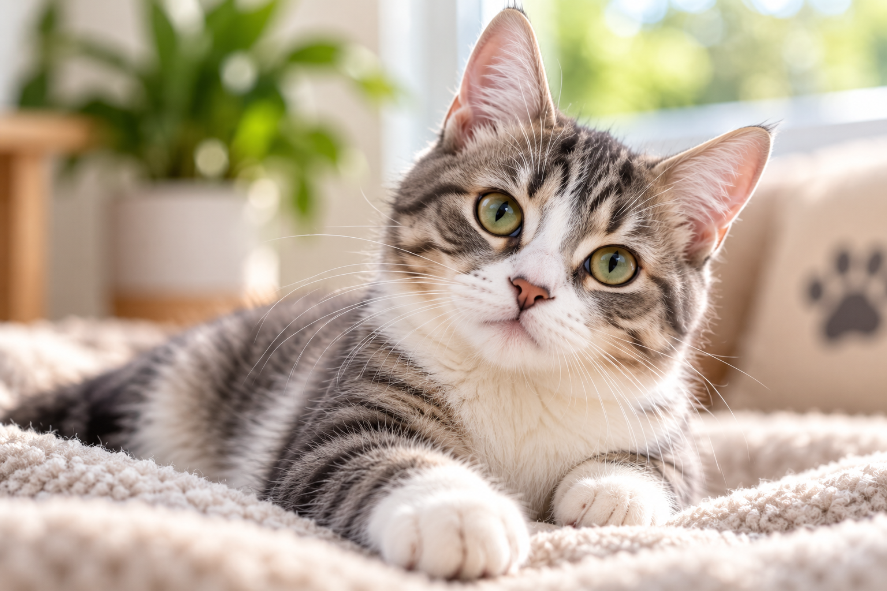
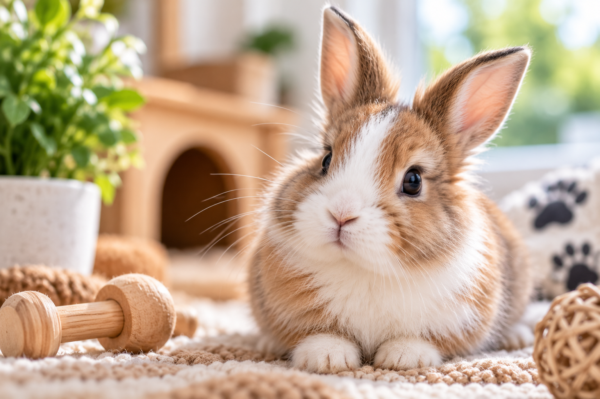

Bienvenidos
Brindamos atención y cuidado para tus mascotas.
La salud y el bienestar de tu mascota son nuestra prioridad. Brindamos atención profesional y acompañamiento en cada etapa.
Solicitar consultaNuestros profesionales
Nuestros pacientes
Porque cada mascota merece el mejor cuidado.


Nuestros servicios
Atención veterinaria pensada para acompañar a tu mascota en cada etapa de su vida.
Consultas veterinarias
Atención clínica profesional para perros y gatos.
Vacunación
Planes de vacunación y controles sanitarios personalizados.
Controles
Seguimiento periódico para cuidar la salud de tu mascota.